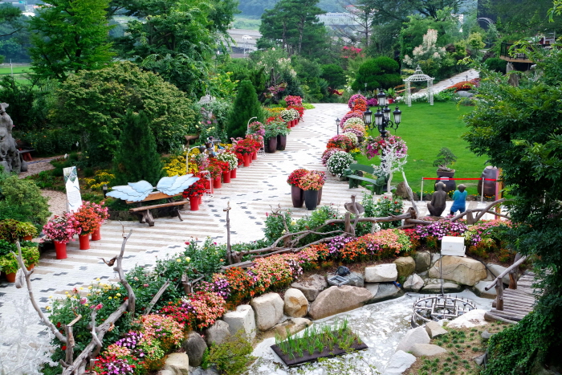
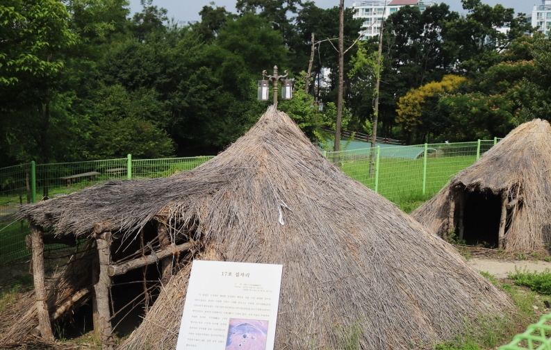
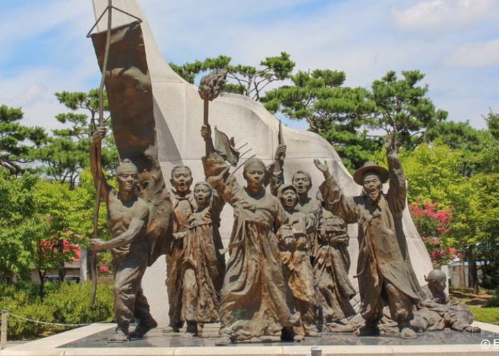

주요 관광지
-
쥬쥬피아
이곳은 어린이들이 열광하는 동물 친구들을 만나 볼 수 있는 실내동물원과 아이들이 즐겁게 뛰어놀 수 있는 키즈카페가 어우러진 테마파크이다. 소중한 추억을 남길 수 있는 트릭아트존과 다양한 체험이 가능한 놀이시설도 준비되어 있다.
입장료 | 대인 15,000원 소인 12,000원 -

아름다운정원 화수목
아름다운정원화수목은 천안시 목천읍 교천리에 위치한 대한민국 민간정원 1호이다. 100m 인공폭포와 석부작길, 탐라식물원, 명품분재원, 테마정원 등의 다양한 힐링공간과 레스토랑, 베이커리카페 등 맛있는 식사가 가능한 가능한 곳이며, 천안 유일 야외가든웨딩 과 실내연회등도 가능한 곳이다.
입장료 | 성인 5,000원 소인 3,000원
-

불당동 유적공원
불당동 유적공원은 충남 천안시 서북구에 자리 잡고 있다. 천안시 불당지구 택지개발사업 과정에서 발굴 조사된 유적을 정비하고 복원하여 조성되었다. 공원에서는 청동기 시대의 집터와 후대의 무덤들을 살펴볼 수 있다.
-

아우내독립만세운동기념공원
충청남도 천안시 동남구 병천면 병천리에 있는 공원으로, 3·1 운동 90주년을 맞아 2009년 준공한 곳이다. 1919년 4월 1일 아우내 독립 만세 운동을 전개한 역사의 현장으로 당시 병천 아우내 장터와 일제의 헌병 주재소가 있던 곳이다. 당시 헌병 주재소 부지와 시위 군중이 일본 헌병의 총에 맞아 순국한 장소를 보존하고, 애국선열들의 나라 사랑 정신을 계승하며, 역사를 체험할 수 있는 교육의 장으로 활용하기 위하여 조성했다.
맛집 및 카페
-

설촌냉면석갈비
한식
주소 | 충남 천안시 동남구 천안천8길 63 유천냉면 -

더몰트하우스
양식
주소 | 충남 천안시 서북구 불당31길 22 1층 -

요일
카페
주소 | 충남 천안시 동남구 터미널6길 12 대림한숲 상가 1층 요일